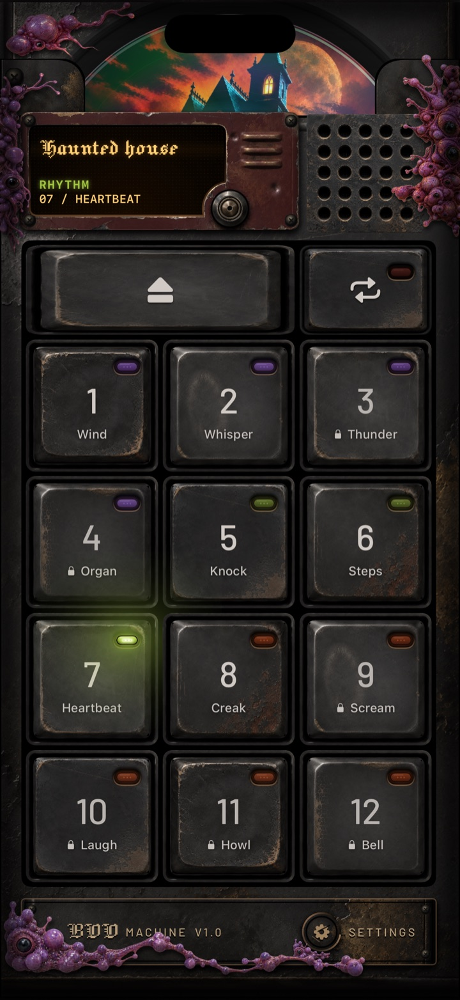
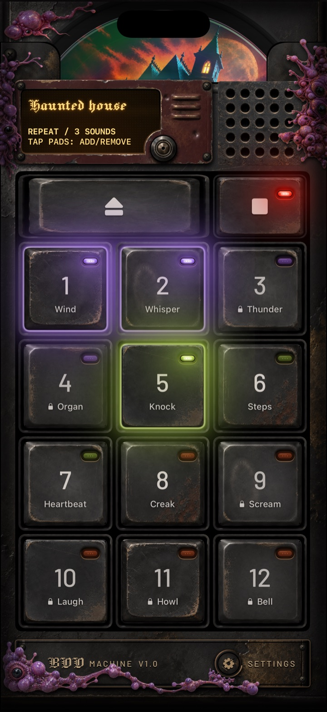
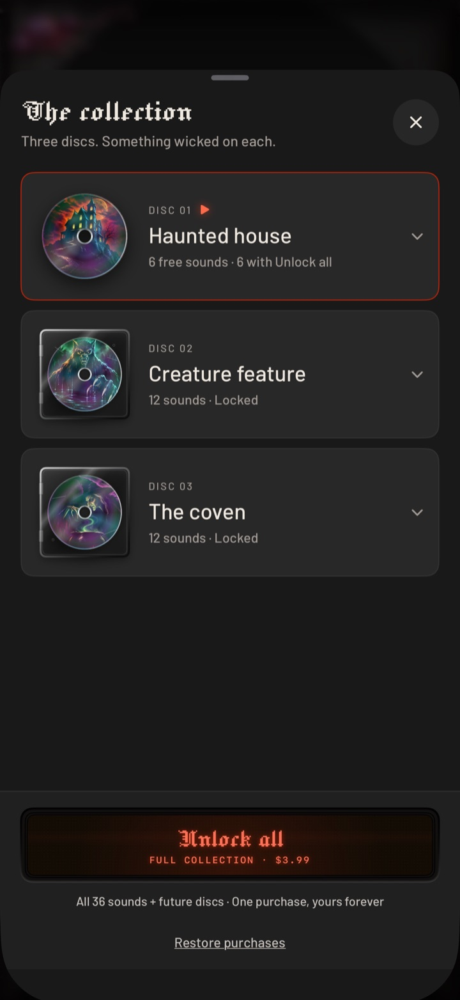

Boo Machine — press kit
A cursed disc player for your iPhone: tap, layer and repeat Halloween sounds.
Short description
Boo Machine turns your iPhone into a cursed disc player. Tap, layer and repeat Halloween sounds across three illustrated discs: Haunted house, Creature feature and The coven. Add wind and whispers to a decoration, punctuate a ghost story with footsteps and knocks, or build a strange sound scene of your own. Six sounds are free. One optional purchase unlocks all 36. There is no subscription, account or advertising, and the included sounds play offline once the app is installed.
Product facts
| App | Boo Machine |
|---|---|
| Store title | Boo Machine: Halloween Sounds |
| Platform | iPhone |
| Current status | TestFlight feedback beta; App Store launch planned for September 29, 2026, subject to review |
| Beta offer | All 36 sounds unlocked temporarily for content/control feedback |
| Retail free offer | Wind, Whisper, Knock, Steps, Heartbeat and Creak from Haunted house |
| Retail upgrade | All 36 sounds across three discs, plus future discs added to Boo Machine; one non-consumable purchase |
| Retail price | US $3.99 / €3.99 / £3.99 one-time (configured; live at launch) |
| Core controls | Tap sounds; layer them; turn Repeat on and toggle pads; hold Repeat to stop; Eject to change disc |
| Playback | Included sounds work offline once installed; app must remain active and leaving the app clears playback |
| Business model | No subscription, account or in-app advertising |
| Current analytics | No developer analytics SDK in the app; Apple purchases/store reporting are separate |
| Artwork/audio | Created with generative tools under human direction, selection and editing; no runtime AI or real-person voice cloning |
| Maker/contact | Fabricio — hello@fabric8.de |
| App Store | Coming at launch |
| TestFlight | testflight.apple.com/join/jr1YqwtJ |
| Support | boomachine‑site/support.html |
| Privacy | boomachine‑site/privacy.html |
Images
iPhone captures from the current build. Click a download link for the full-resolution PNG.

The player
Download PNG
Repeat: three sounds layered
Download PNG
The collection and Unlock all
Download PNG
{kind=link}
{kind=link}
{kind=link}
App icon: 1024 px PNG · 512 px PNG
{kind=link}
{kind=link}
Pack examples for accurate coverage
- Haunted house: Wind, Whisper, Thunder, Organ, Knock, Steps, Heartbeat, Creak, Scream, Laugh, Howl and Bell.
- Creature feature: Ghost, Bats, Swamp, Skitter, Claws, Bones, Tentacle, Chomp, Zombie, Werewolf, Gargoyle and Roar.
- The coven: Cauldron, Chant, Hum, Drum, Rattle, Cackle, Cat, Screech, Raven, Spell, Gong and Demon.
For creators
Boo Machine is a cursed disc player for your iPhone: tap, layer and repeat Halloween sounds.
Free access to the full unlock for creators is available at launch through an Apple offer code — email hello@fabric8.de.
Two things worth filming:
- The disc-eject reveal. Eject opens the collection.
- Hold Repeat: the un-haunt button that silences a room. Hold Repeat to silence everything and clear.
Posting is optional and honest reactions are welcome.
Artwork and audio were created with generative tools under human direction, selection and editing; there is no runtime AI or real-person voice cloning in the app.